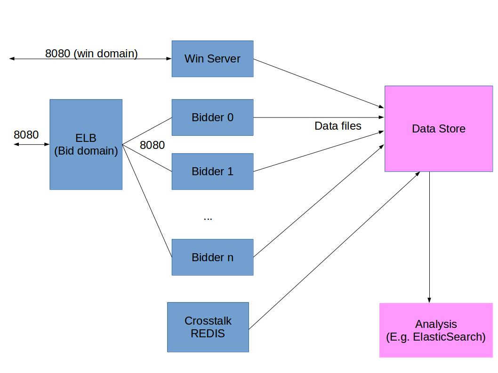

In this blog post we will talk about the strategy of building an infrastructure for a multi-instance RTB4FREE system. Note RTB4FREE is NOT a turnkey DSP. It's the basis for you to build upon. So a lot of the mechanical parts of the DSP are still your responsibility.
In addition, you need to be very familiar with ANT, JAVA, REDIS and Ubuntu to get this all working. This is pretty hairy stuff.
There are several different instances needed to run the bidding engine. We will show you how to set up the various AWS instances, and the strategy for running your bidding farm. All of your instances should be running UBUNTU version 14.
You will also need a couple of domains to use with your DSP. You can use IP addresses to address your DSP, but one IP address needs to be pointed at a load balancer, the other to an instance that processes the WINs from the SSP.
The picture below sets forth what the architecture will look like:
So, in order to run a 2 bidder system, you need a REDIS/Crosstalk instance, 2 bidder instances, a win server, and a load balancer. You also need to periodically copy off and truncate the RTB4FREE log files (in /var/log/rtb4free.log on each Win Server and Bidder, and the request data files from the bidder instances located at ~ubuntu/XRTB/logs/request).
Where you store your data files and how you do analysis is up to you and is shown in pink.
There are two addresses very critical to your DSP, the bid request address (where the SSP sends the bid requests) and the IP address where the SSP sends the WIN notifications.
In an operational DSP using RTB4FREE it is important to understand that these are 2 different domains: BID-REQUEST address and WIN-NOTIFY address. They must not be behind the same load balancer.
The BID-REQUEST address is pointed at your load balancer. The RTB4FREE bidders run behind the load balancer. So, if you need more bid request processing capabilities, add more instances behind the load balancer
The WIN-NOTIFY IP must not be behind the load balancer, it is separate. The reason why is as follows: The SSP is going to be cramming 1000s of connections to your load balancer and flooding you with requests. It is possible at max capacity your load balancer may drop connections. This is ok, because if this happens you are processing at the max rate anyway. But if a WIN-NOTIFY comes in and the load balancer is maxed-out, the WIN-NOTIFY will be lost and you will not respond with the ad or record the WIN.
You will need a load balancer, and you will point your BID-REQUEST IP address to the load balancer.
You will need at least one bidder instance, that will run the RTB4FREE software on it to process your bid requests. The more CPUs this machine has the better. It needs at least 16GB of RAM.
A separate instance will be needed to run the WIN server. This is simply another RTB4FREE bidder, but it will only process wins. The WIN-NOTIFY address is this instance. Give this instance 8GB RAM and at least 4 CPUs.
A separate instance is needed to run REDIS. If you run Crosstalk you can run that here as well. Bear in mind Crosstalk can use a lot of disk space to store logs. A 4 CPU system with 16GB of RAM should suffice.
This does not include whatever system you are using to store bid request data, log files, etc. or for running Splunk, ElasticSearch and whatever you are using for system management.
For example purposes we will use the domain names: diydsp.bids.com and diydsp.wins.com for the purposes of illustrating the architecture. The following diagram sets out the architecture of the system:
TBDOne instance should run REDIS. You need to install the latest REDIS server on this site. REDIS is located here. Install it as a service and YOU MUST ASSIGN A PASSWORD. HACKERS WILL TRY TO GAIN ACCESS THE 6379 PORT!
For sake of example purposes, we will presume you are using the password "thisisaverylongpassword".
Make sure your TCP port 6379 is open on this system.
You also need to get the WEBDIS system loaded and running on your system. Instructions are located here..
Make sure you change the password in the configuration file, and make sure TCP port 7379 is open on this system.
Start the redis-server. Your system admin procecures should ensure REDIS stays up, if REDIS goes down the system will stop functioning. REDIS cache and publish/subscribe are key components of this system.
Now we assume your load balancer is up and is running and your diydsp.bids.com address is assigned to it.
You have at least one RTB4FREE bidder instance set up and running.The load balancer must be set to route to this instance, or the bidder will not receive bids.
Remember, the domain diydsp.bids.com points to the load balancer.
Make sure port 8080 is open on this instance or there will be no bids.
This system must have JAVA 1.8, and GIT loaded on it first. Heres how to get these components installed:$sudo add-apt-repository ppa:webupd8team/java $sudo apt-get update $sudo apt-get install oracle-java8-installer $sudo apt-get install oracle-java8-set-default
$sudo apt-get git install $
The next step is to modify linux for more file handles. It is set ridiculously low by default. You will edit /etc/security/limits.conf):
Make sure - nofile entry looks like the following:
* - nofile 40000
This will allow 40,000 open files. You will have to reboot Ubuntu, and then type the commans:
$ulimit -n
It should say 400000.
Now you will get RTB4FREE from the git repository and make it. Follow these instructions:
Do a git clone and then build/
$git clone https://github.com/benmfaul/XRTB.git $cd XRTB $mkdir logs $ant onejar $cat > .passwords thisisaverylongpassword$
Now we will set up your configuration file. The default is Campaigns/payday.json. But we will copy it to a new name Campaigns/diy:dsp.json. This is done because the GIT repository owner may change this sample file and you don't want this to overwrite your configurations.
$cd XRTB/Campaigns $cp payday.json diy:dsp.json $vi diy:dsp.json
Now we will edit the diy-dsp.json file to use your REDIS instance. Here is what the file should look like after editing the "redis" object:
"redis": {
"host": "myredisipaddress",
"bidchannel": "bids",
"XXXnobidchannel": "nobids",
"winchannel": "wins",
"requests": "file://logs/request",
"logger": "log",
"clicks": "clicks",
"XXXforensiq": "forensiq",
"port": 6379
},
Change the "myredisipadress" to the IP address of your REDIS host. Note the XXXforensiq, XXXnobidschanne; fields. This suppresses logging of nobids and forensiq messages - unnecessary traffic and uses resources.
Also note that the XRTB/logs/requests file will contain all requests received from the SSP. This file will grow forever until you run out of disk space.
Now we change the diy:dsp.json file to use the WIN-NOTIFY address. Edit the app.winurl and win.redirec-url objects, after editing it will look like:
"winurl": "http://diydsp.wins.com:8080/rtb/win", "redirect-url": "http://diydsp.wins.com:8080/redirect",
Each RTB4FREE bidder instance has a unique name and is addressed by that name. By default, it is simply known by it's instance name. But that looks confusing. For this RTB shard name we will choose the form "diy:bidder-1". If we create a new instance we will name it "diy:bidder-2" and so on. The shard name is given to the bidder instance at startup using UPSTART. EACH BIDDER NEEDS A UNIQUE SHARD NAME!
Now we affix the name to our bidder as follows:
$cd XRTB $sudo cp shell/upstart/rtb4free.conf /etc/init/rtb4free.conf Now edit the /etc/init/rtb4free.conf file. We will use the shard name: "dsp-1", the file should look like:
$sudo vi /etc/init/rtb4free.conf
description "RTB Bidding System"
author "RTB4FREE.com"
start on runlevel [3]
stop on shutdown
expect fork
script
cd /home/ubuntu/XRTB
java -jar -Xmx4096m /home/ubuntu/XRTB/xrtb-all.jar -s diy:dsp-1 >/var/log/rtb4free.log 2>&1
emit RTB4FREE_running
end script
Modify the ant build.xml so we run RTB4FREE using the console, for debugging purposes.
$cd XRTB $cp build.xml build-diy.xml $vi build-diy.xml
Change the "xrtb" target to use the proper shard name and configuration file. When complete that target would look like this:
Also modify the target for config-website to change the website
Change directory and run the ant script
$cd XRTB $ant load-database
Now we can test the system. This requires two consoles. One to run the bidder and one to run the test.
In one console run the bidder:
$cd XRTB $ant -f diy-build.xml xrtb
After the bidder starts go to the other window antd send a test bid:
$cd XRTB/shell $sh curltest.sh
It should return a bid that looks something like this:
When you are done testing, stop the bidder with a control-c.
Now it is time to make the bidder operational. To start the bidder do the following:
$sudo service rtb4free start $
It should return the process ID. To stop the service do:
$sudo service rtb4free stop $
If when starting or stopping it hangs, this is due to a a bug in UPSTART when there is an error. If there is an error, you can kill the process by hand. You have to reboot the instance in order to revocer the ability to restart as a service.
Now we make the instance that will run the RTB4FREE win processor. The easiset thing to do is to clone the same instance you just made for The Bidder instance. All the code is there, all you need to do is change the shard name.
Tthe domain diydsp.wins.com must be pointed to this instance's address.
We presume you cloned the bidder instance for diy:dsp-1. When the system comes up, you need to make a change to the shard name. Here's how to do that:
Now you can start the Win instance: Simply type the command:
$sudo service rtb4free start $
The Win instance logs to ~ubuntu/logs also. Not, if you do not start the Win instance, your bidders can bid and win auctions, but your ads will not serve - but the SSP will still charge you.
There are two locations for log files:
[2016-06-01 16:38:04.355] - 1 - diy-dsp-1:8080 - Heartbeat - cpu=7.583%, freedsk=48.745%, threads=120, low-on-threads= false, avgBidTime= 0, avgForensiq= 0, total=4, requests=4, bids=1, nobids=0, fraud=0, wins=0, pixels=0, clicks=0, stopped=false, campaigns=1
{"id":"35c22289-06e2-48e9-a0cd-94aeb79fab43","at":2,"imp":[{"id":"35c22289-06e2-48e9-a0cd-94aeb79fab43-1","instl":0,
"banner":{"h":50,"w":320,"mimes":["image/gif","image/jpeg","image/png"],"pos":0},"ext":{"nex_screen":0}}],"site":{
"id":"99201","name":"BidderTestMobileWEB","domain":"junk1.com","cat":["IAB1","IAB2"],"keywords":"radiation","page":
"http://www.nexage.com","ref":"http://www.iab.net","search":"radiation","publisher":{"id":"98401","name":"testme"},
"ext":{"nex_coppa":0}},"device":{"didsha1":"132079238ec783b0b89dff308e1f9bdd08576273","dpidsha1":
"f22711a823044bb9ce7ace097955de0286eb0182","ip":"166.137.138.18","carrier":"ATT","ua":"Mozilla/5.0 (iPhone; U; CPU
iPhone OS 4_2_1 like Mac OS X; el-gr) AppleWebKit/533.17.9 (KHTML, like Gecko) Version/5.0.2 Mobile/8C148 Safari/6533.18.5",
"make":"Apple","model":"iPhone","osv":"3.1.2","connectiontype":3,"devicetype":1,"geo":{"lat":42.378,"lon":-71.227,"country":
"USA"}},"user":{"id":"ASDFJKL","yob":1961,"gender":"F","keywords":"sports","geo":{"country":"USA","city":"Waltham","zip":
"02451","region":"MA","type":3},"ext":{"nex_eth":"4","nex_marital":"M","nex_kids":"N","nex_hhi":75000,"nex_dma":"Boston"}},
"ext":{"timestamp":1457815226889,"exchange":"nexage"}}
Your system management processes MUST clean these directories out or your system will shortly run out of disk space.
First, we haven't shown you how to make campaigns yet. At this point in the process campaigns are hand tailored in a JSON file called Campaigns/database.json. It's not hard to figure out. But this is just sample campaigns for test purposes.
The next thing you are tempted to do is load 100 campaigns into the system and try to process 10K QPS. And the system will fail. Guaranteed.
Your processes for controlling the system, system maintenance, and the like are not debugged, and many things will break, at once.
Here is an integration path:
If you create a new bidder instance, say a second bidder, the easiset thing to do is to clone the instance that was used for diy:dsp-1. Them just change the shard name in the startup and the build file:
Then just start the bidder as normal "sudo service rtb4free start"
Make sure the load balancer knows about this new instance or it will receiver no bids. Also, make sure your system management tools know about the instance so the log files can be properly managed.
If you run the bidders but do not truncate the log files you will run out of disk space very rapidly. Below is a shell script that you can use to frequently copy the bidder's log file and XRTB/logs/request bid request data to a central location, then truncates the log files on the bidder. I suggest running this frequently, say once every hour at a minimum.
CERT=~ben/certs/rtb4free_key.pem RTB=ubuntu@rtb4free.com WORKDIR=. DATE=$(date +%Y%m%d) TIME=$(date +%T) mkdir $WORKDIR/logs mkdir $WORKDIR/logs/$RTB ssh -i $CERT $RTB sudo cp /var/log/rtb4free.log /var/log/rtb4free.log.$DATE.$TIME ssh -i $CERT $RTB sudo truncate -s0 /var/log/rtb4free.log scp -i $CERT $RTB:/var/log/rtb4free.log.$DATE.$TIME $WORKDIR/logs/$RTB ssh -i $CERT $RTB sudo rm /var/log/rtb4free.log.$DATE.$TIME ssh -i $CERT $RTB sudo cp XRTB/logs/request request.$DATE.$TIME ssh -i $CERT $RTB sudo truncate -s0 XRTB/logs/request scp -i $CERT $RTB:XRTB/logs/request.$DATE.$TIME $WORKDIR/logs/$RTB
Simply chabge the CERT to where your cert file resides; change the RTB to the location of the bidder; change WORKDIR to where the files will be copied on the local repository.